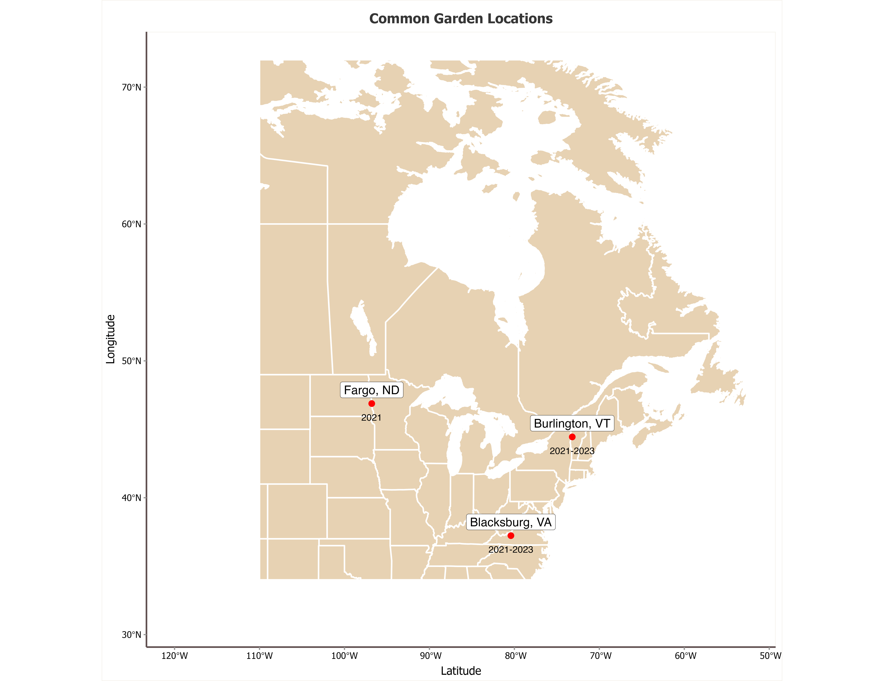

Risk of Maladaptive Phenological Responses to Climate Change in Natural Populations of Hybrid Poplar Trees
Introduction
For trees inhabiting temperate regions of the world, traits related to seasonal phenology are often adapted to home environment, suggesting that rapid changes to these local climates could cause populations to become maladapted in the near future. For instance, the timing of the initiation of leaf expansion from formerly dormant buds in spring (a process here on referred to as “bud flush”) represents an adaptive balance between selection for a long growing season and selection against the risk of cold injury (Liu et al. 2018; Henner et al. 2020; Richards et al. 2020; Gao et al. 2022). In many tree species, bud flush timing is known to be strongly influenced by changes in mean daily temperatures during late winter and early spring ((Horvath et al. 2003);(Pau et al. 2011);(Vitasse, Lenz, and Körner 2014);(Flynn and Wolkovich 2018)). This environmental sensitivity means that long-term changes or short-term fluctuations in the environmental cues that influence bud flush timing may cause trees to undergo bud flush too early or too late in the season. This mistiming of phenology could reduce fitness through exposure to late spring frost events or shortening of the realized growing season (Way, 2011; Brunner et al., 2014; Charrier et al., 2015). While some trees may be able to adjust bud flush timing to track changes in the optimal growing season, recent research has found mixed support for this hypothesis across tree taxa (Gao, Lian and Liu et al., 2022). Additionally, research in multiple tree species shows evidence of genetic variation for bud flush timing, implying that both genetic and environmental factors influence this trait [Olson et al. (2012); Alder et al., 2021]. Accurate prediction of the risk of maladaptive phenology in future climates requires a better understanding of the relationship between genetic variation, environmental context and bud flush timing. Furthermore, predictions of maladptive risk could facilitate prioritization of tree populations for conservation concern, based on genetic background and local environment.
Association studies have identified many of the specific loci that influence bud flush timing, which include genes in the flowering time pathway, phytochromes, DAM genes, and genes related to signaling and response to temperature (Olson et al., 2013; Howe et al., 2015; McKown et al 2014; McKown et al., 2018). However, these studies identify different loci across environments, populations and closely-related species, implying that genotype by environment (GxE) and genotype by genotype (GxG) interactions influence the genetic architecture of this trait. The nature of these genetic interactions have significant implications for tree conservation because trees are long lived, sessile organisms. Long generation times may allow anthropogenic climate change to progress faster than trees can evolve adaptively or migrate in order to maintain fitness in future environments (Savolainen et al., 2004; Aitken et al., 2008; Duputié et al., 2015). This means that phenotypic plasticity is an important route through which trees can maintain adaptive phenological timing in a changing climate (Vitasse et al., 2010; Scheiner et al., 2019; Cooper et al., 2019). GxE interaction can be thought of as genetic variation for the reaction norm of a plastic trait, and some genotypes may display bud flush reaction norms that are pre-adapted to climate change, allowing bud flush timing to track changes in the length of the optimal growing season over time. Similarly, introgression may act as a source of genetic novelty that could facilitate rapid evolution of phenology, but the extent to which GxG interactions in admixed individuals manifest as novel bud flush phenotypes remains unknown.
Hybridization is common in forest trees, and natural hybrid zones that span environmental gradients provide a unique opportunity to study these GxG and GxE interactions, as admixed individuals expose novel combinations of genotypes to new environments. Admixed genotypes may display divergent plasticity compared to parental species, but it is likely that this increased plasticity only increases capacity to adapt to future growing seasons in certain environments and populations. Therefore, properly assessing the adaptive potential of admixed tree genotypes requires sampling of broad climatic gradients and genetic gradients. Such landscape genetic analyses can help determine the potential for plasticity and introgression to drive or disrupt pre-adaptation to future climates across the landscape.
Here, we took advantage of natural hybrid zones between Populus balsamifera and Populus trichocarpa to determine the genetic architecture of bud flush timing in individuals with varying degrees of admixture. Populus balsamifera and Populus trichocarpa are two closely related species of cottonwood native to northern North America. Genetic analyses suggest the two species began to diverge 1.2 million years ago, but gene flow continued between them both before and after a brief period of isolation beginning 860,000 years ago (Bolte et al., 2024). Despite continued gene flow, these species have diverged ecologically. Populus balsamifera is a boreal tree inhabiting mountain valleys and river drainages of continental North America as far north as the subarctic. Meanwhile, Populus trichocarpa is limited to the more temperate, maritime climates of the Pacific Northwest and Western Canada. These two species continue to naturally hybridize in regions where their ranges overlap, and past studies have identified hybrid zones populated by both recent and advanced-generation hybrids (Suarez-Gonzalez et al., 2016; Bolte et al., 2024).
In Populus balsamifera and Populus trichocarpa, two physiological processes contribute to bud flush timing: ecodormancy and endodormancy. Both of these stages of winter dormancy must be released before bud flush can take place, an adaptation that likely arose as a safeguard against premature bud flush. Endodormancy is broken by the accumulation of chilling temperatures during late winter, while ecodormancy is broken by the accumulation of heat sums in early spring (Vitasse & Körner, 2014). Heritable variation for chilling/warming requirements may underlie genetic and GxE effects on bud flush (Way, 2011; Guy, 2014; Lundell et al., 2019; Thibault et al., 2020). Given the climatic differences between their native ranges, P. balsamifera and P. trichocarpa likely experience divergent selection for bud flush timing, but the genetic and phenotypic consequences of this divergent selection have not been extensively studied in the hybrids of these two species. Admixture between P. balsamifera and P. trichocarpa may underlie bud flush reaction norms that will be necessary to maintain fitness under climate change, or it may disrupt existing allele combinations that are pre-adapted to future climates. Natural hybrid zones between these species offer a unique opportunity to weigh the relative probability of these possible interactions between introgesssion, plasticity and climate change.
In this study, our goal was to test the potential for plasticity to maintain adaptive bud flush timing in the face of climatic change, asses the influence of genetic variation on this potential, and to better understand the effect of introgression on the distribution of this variation between species and populations. With this in mind, we sampled 575 Populus balsamifera and Populus trichocarpa trees from 6 distinct transects passing through regions of range overlap between these species, which we expected to contain hybrid zones. We sequenced the full genome of each sampled tree and propagated clones of each sample in 3 climatically-distinct common gardens over multiple years, in order to observe differences in bud flush timing. We then combined these bud flush observations and genomic data with environmental variables in order to fit genomic prediction models. We used the variance components and predictions from these models to answer the following questions:
- To what extent is bud flush timing plastic across environments?
- Are bud flush timing reaction norms predictable across genetic and environmental context?
- Will predicted changes in bud flush timing reduce the fitness of natural populations under future climates?
- How does introgression influence heritable variation for bud flush timing and risk of maladptation to future climates?
Methods
Sampling
In January 2020, we collected dormant branch cuttings from 546 poplar trees along 7 distinct latitudinal transects spanning natural contact zones between Populus trichocarpa and Populus balsamifera (Figure 1a).These cuttings were transported to a greenhouse at Virginia Tech (Blacksburg, VA) for propagation in a mist house. Rooted cuttings were then propagated in 3 common gardens (Blacksburg, VA; Burlington, VT and Fargo, ND). Three replicates of each of the 546 cuttings were planted in each garden, using a randomized block design, in June 2020.
Whole genome sequencing and variant calling
Whole genome sequencing and subsequent bioinformatic analyses were performed as described in Bolte et al. (2024). Briefly, Genomic DNA libraries for all sampled individuals were constructed at the Duke University Center for Genomic and Computational Biology and sequenced using an Illumina NovaSeq 6000 instrument with an S4 flow cell in 2 × 150 bp format with 64 samples per lane (Illumina Inc., San Diego, USA). De-indexing, QC, trimming adapter sequences, and sequence preprocessing were completed by the sequencing facility. We used the Burrows-Wheeler Aligner (BWA) to map resulting reads to the P. trichocarpa reference genome (v4.0) and called variants in gVCF format for each individual using The Genome Analysis Toolkit (GATK) (v3.7) ((Li and Durbin 2010); Van der Auwera and O’Connor (2020)). We used GATK to merge individual gVCFs and then, using vcftools, version 0.1.16, filtered the resulting ~82 million variant sites to remove variants with missingness >10%, mapping quality <40, elevated strand bias (FS > 40, SOR > 3), high differential mapping quality or positional bias between reference and alternate alleles ( MQRankSum < −12.5; ReadPosRankSum < −8) or low quality-by-depth (QD < 2) ((Danecek et al. 2011)). We then further filtered these variants to retain only bi-alleleic SNPs and used Plink v1.9 to thin variant sites in high linkage disequilibrium using 10,000bp windows sliding in increments of 1000 bp ((Purcell et al. 2007)). After these filters, 299,335 variant sites remained. Finally, as described in Bolte et al. (2024), we removed 29 individuals of unknown ancestry, 8 individuals without phenotype data, and one individual due to excess missing genotypoes, leaving 509 samples for further analysis. As described in Bolte et al. (2024), we used this set of LD-pruned SNPs to perform ADMIXTURE analysis, using values of K from 2-6 and comparing cross validation error (k-folds = 10) between these values ((Alexander, Novembre, and Lange 2009)).
Phenotype observations and quality control
Bud flush observations were performed in 2021, 2022 and 2023 for the VA and VT gardens, and only in 2021 for the ND garden. Bud flush was monitored at least two days per week through the spring each year. We scored bud flush as the number of Julian days at which the scales of terminal buds parted and leaf tips emerged, as described in McKown et al. (2018). To facilitate comparison of bud flush timing across years and gardens, we converted Julian day measurements to units of cumulative growing degree days (cGDD) using the formula described in Olson et al. (2013). Conversions were made using custom R (version 3.6.1) scripts and daymet daily climate data for each year at each garden ((R Core Team 2024);(Thornton et al. 2021); (Thornton, Running, and White 1997)). We also used custom R scripts to perform quality control on bud flush observations and to fit linear models calculate genetic BLUP estimates for each genotype from raw bud flush observations, accounting for the effect of each randomized block in our planting design.
Environmental data
Models of bud flush timing
To estimate the effect of environment, genetics and their interaction on bud flush timing, we fit mixed effects linear models using the R packages lme4 and nlme ((Bates et al. 2015);(Pinheiro, Bates 2023)). We used Plink to convert the VCF of LD-pruned SNPs to a matrix and perform principle component analysis (PCA). We also performed PCA on the set of environmental variables calculated for each year in each common garden with the prcomp function in R. We used
To test for genetic clines , we also regressed common garden observations of bud flush timing on climatic varibles describing the provenances of each observed tree. We compared linear and quadradic mixed effects models of bud flush timing, including an effect of source environment and genetic admixture
Results
Genomic prediction
Table 1 shows the variance components of the three genomic prediction models we fit in this study, as well as the prediction accuracy of these models under cross-validation.
Discussion
Climate change poses a risk to all life on earth, as it threatens to disrupt any existing equilibrium between adaptive genetic variation and contemporary climates, leading to local maladaptation or even extinction of certain species or populations. This concern is exacerbated in long lived organisms, as capacity to evolve adaptively in response to changes in local climate is reduced by long generation time. Two key processes can potentially insulate populations of long-lived organisms from maladaptation are plasticity and adaptive introgression. Plasticity for adaptive traits is likely to have responded to selection in the past,and this selection may manifest as GxE when it is divergent across populations. The shape of the reaction norm under future climates and the degree of genetic control over that reaction norm define the risk of maladaptation for a plastic trait. If adaptive plasticity is rare and highly heritable, then conservation efforts should be concerned with the capacity for this adaptive variation to spread between populations. Therefore, introgression must be considered as a potential conduit of genetic rescue when GxE interactions for adaptive traits are strong and divergent.
In this study, we observed a strong influence of GxE on bud flsuh timing among the poplar trees we sampled.
Poplar trees inhabit climatically variable environments and often persist through clonal propogation over timescales that exceed the lifetime of an individual tree. With this in mind, it makes sense that these trees display a high degreee of plasticity for a phenological trait. The strong GxE interactions we observe may reflect divergent selection for phenological plasticity across poplar populations.
In this work, we predict maladptation of phenology from genetic data across continuous and discrete environments. This framework essentially asses polygenic risk of maladptive plasticity in future climates. In past research, genome-wide estimates of maladpative risk under climate change have generally taken the form of genomic offset estimations, in which risk of maladaptation to future climates is predicted based on existing patterns of allele turnover along contemporary environmental gradients. Genomic offset is a powerful tool for risk assessment in conservation settings, but its effectiveness is likely to vary with conservation context. For example, being a purely genetic metric, GO fails to account for phenotypic plasticity, and therefore may overestimate maladaptation that could be mitigated through plastic adjustmetns to adaptive traits.However, this issue is reduced when there is a genetic component to plasticity (ie. genotype-by-environment interaction), meaning that allelic variation underlying variation in plasticity may be encapsulated in GO calculations. Our results suggest that while bud flush timing is highly plastic across envrionments, much of the plasticity in this adaptive trait is heritable, as suggested by the strong GxE effects we observe. However, The strong effect of environment in our predictive models suggest that purely genetic methods fail to fully encapsulate variation for this trait.
Additionally, GO is thought to overestimate maladaptation in contexts where rapid evolution is possible. The ability of GO to predict maladaptation rests on the asssumption that the genetic variation involved in adaptation to existing climatic gradients will also play a role in adaptation to future climates. If genetic diversity is high, and life history allows for selection to act swiftly on this variation, rapid evolution to future climate may be possible and may involve different loci than those selected upon by past climates. For this reason, GO is thought to be more helpful for conservation of long lived organisms, such as forest trees. However, hybridization is common in forest trees and introgression of genetic variation between tree species may facilitate rapid evolution to changing climate. Here, we sought to asses the effect of genetic admixture on bud flush reaction norms and predict the potential for these effects to maintain or reduce fitness in future climates.
Figures

